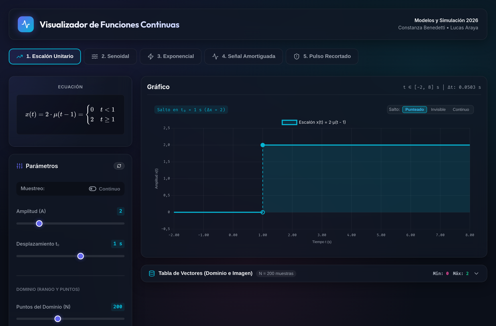
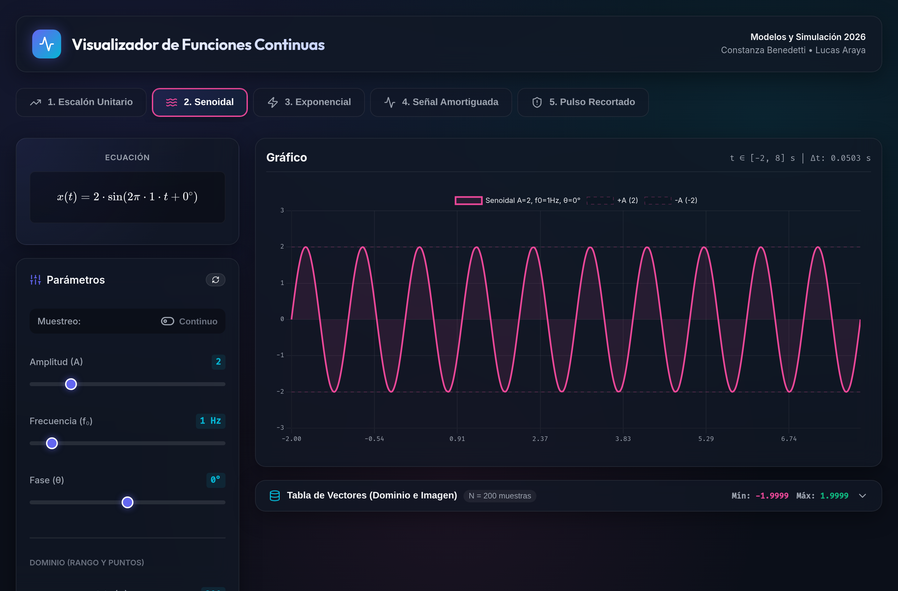
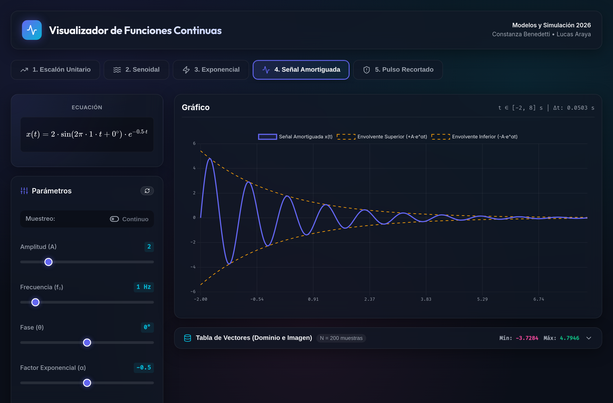
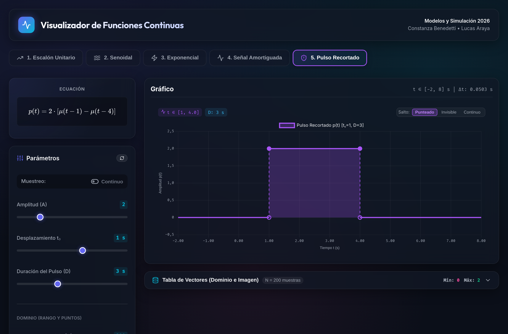
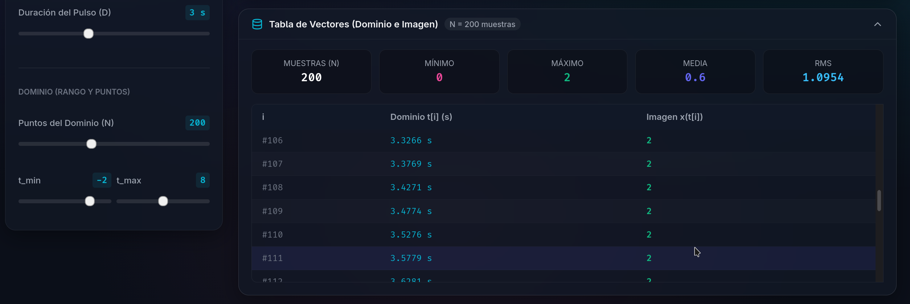

Para resolver este trabajo práctico armamos una aplicación web interactiva utilizando React 19, Vite y Chart.js. La idea principal fue simular las señales pedidas en un entorno donde podamos mover los parámetros con controles deslizantes (sliders) en tiempo real y ver al instante cómo responde cada función.
Para pasar del tiempo continuo al entorno digital de la computadora, discretizamos el intervalo temporal generando un vector de tiempo t con N = 200 muestras entre t_min = -2 s y t_max = 8 s, con un paso Δt = (t_max - t_min) / (N - 1) ≈ 0.0503 s. Luego calculamos punto por punto el vector resultante x(t) para graficarlo en tiempo real.
| Función | Definición Matemática | Variables Ajustables |
|---|---|---|
| 1. Escalón Unitario | x(t) = A · μ(t - t₀) | Amplitud A, Desplazamiento t₀ |
| 2. Senoidal | x(t) = A · sen(2π · f₀ · t + θ) | Amplitud A, Frecuencia f₀, Fase θ |
| 3. Exponencial | x(t) = A · e^(α · (t - t₀)) | Amplitud A, Exponente α, Retardo t₀ |
| 4. Señal Amortiguada | x(t) = A · sen(2π · f₀ · t + θ) · e^(α · t) | A, f₀, θ, Factor α, Envolventes |
| 5. Pulso Recortado | p(t) = A · [μ(t - t₀) - μ(t - t₀ - D)] | Amplitud A, Inicio t₀, Duración D |
A continuación mostramos cada una de las funciones implementadas con su explicación breve, las variables que se pueden modificar y la captura de pantalla de la simulación en vivo.
El escalón unitario vale cero para tiempos menores a t₀ y salta al valor de la amplitud A a partir de t ≥ t₀. En el simulador graficamos el tramo inferior en cero y el tramo superior en A, agregando una línea punteada vertical para demarcar con precisión el instante de la discontinuidad. Los parámetros que podemos modificar con los deslizadores son la amplitud A (en la captura fijada en 2) y el instante de activación t₀ (fijado en 1 s).

Es una onda que oscila periódicamente de manera suave entre +A y -A. En el simulador graficamos la curva senoidal junto a dos líneas punteadas que muestran las cotas de amplitud máxima y mínima. Las variables que podemos ajustar desde el panel son la amplitud pico A (puesta en 2), la frecuencia f₀ (en 1 Hz, con un período de repetición de 1 s) y la fase inicial θ en grados (puesta en 0°), la cual convertimos a radianes en el código para correr horizontalmente la onda en el tiempo.

Modela procesos naturales de decaimiento o crecimiento exponencial. Las variables que podemos variar en la interfaz son la amplitud A, el factor de potencia α y el desplazamiento temporal t₀. En la simulación elegimos un valor negativo (α = -0.5), con lo cual la señal decae progresivamente hacia cero a medida que avanza el tiempo. Además, el parámetro t₀ = 1 s fija exactamente el punto de cruce en el cual la curva toma el valor de la amplitud A = 2 (ya que e⁰ = 1).
Esta función combina la oscilación periódica del seno con la caída exponencial de amplitud, representando sistemas físicos con amortiguamiento real donde se va perdiendo energía con el tiempo (como resortes, cuerdas o circuitos RLC). En el simulador graficamos la oscilación principal y trazamos en líneas punteadas amarillas la envolvente superior +A · e^(α · t) y la inferior -A · e^(α · t), mostrando cómo la onda queda atrapada entre ambas mientras se extingue. Los parámetros ajustables son A, f₀, θ y α.

El pulso rectangular lo construimos restando dos escalones: el primero se activa en t₀ subiendo a valor A, y el segundo entra en acción una duración D después, restando A y devolviendo la señal a cero. En el simulador graficamos la ventana rectangular que permanece en A únicamente en el intervalo t ∈ [t₀, t₀ + D]. Desde los deslizadores podemos ajustar la altura A = 2, el momento de inicio t₀ = 1 s y el ancho del pulso D = 3 s (quedando activo entre 1 s y 4 s).

Para auditar los datos calculados sumamos un inspector desplegable en la barra inferior del simulador. Allí podemos comprobar numéricamente cada valor de tiempo del dominio t[i] y de la imagen x[i], además de verificar en tiempo real las métricas cuantitativas: cantidad de muestras (N = 200), mínimo, máximo, promedio y valor eficaz RMS.
